import numpy as np
import matplotlib.pyplot as pltLab 9 · Recurrent Neural Networks & LSTM
Sine-wave forecasting with SimpleRNN, next-word prediction, and Korean movie-review sentiment analysis with an LSTM
RNN sequence prediction, n-gram language models, word-level RNN language models, and LSTM sentiment classification.
NoteAbout this edition
English text and comments were edited for publication. Outputs are archived notebook results, not newly executed results. Lab scaffolds and reference illustrations were supplied by the course. Source and reproducibility notes.
TipSummary
Three sequence-modeling tasks in Keras. (1) A SimpleRNN predicts the next value(s) of a sine wave from three previous samples, first many-to-one and then many-to-many with TimeDistributed. (2) After a short review of n-gram language models and the Markov assumption, a word-level RNN language model is trained to predict the next word, first from a single word and then from a padded context window. (3) An LSTM sentiment classifier is trained on the Naver Sentiment Movie Corpus (NSMC, 150k Korean movie reviews): cleaning with regular expressions, morphological tokenization with KoNLPy’s Okt, rare-word removal, padding, and evaluation on new sentences.
The text data in parts (2) and (3) are Korean by nature of the datasets; English glosses are given in code comments where helpful.
1. A Simple Recurrent Neural Network (RNN) Example
RNNs come in several architectures depending on the number of inputs and outputs.
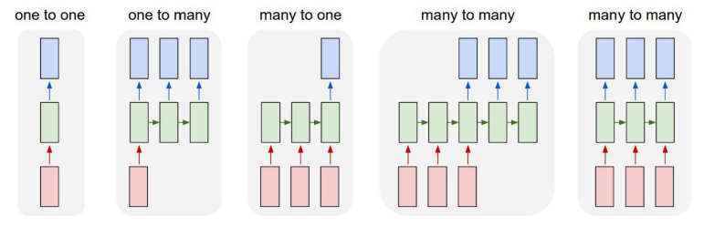
1.1 Predicting a sine function with an RNN (1)
- As a first example we use the sine function.
- Given 3 consecutive sine values, the network predicts the next value.
- Reference (Korean)
s = np.sin(2 * np.pi * 0.125 * np.arange(20))
plt.plot(s, 'ro-')
plt.xlim(-0.5, 20.5)
plt.ylim(-1.1, 1.1)
plt.show()
print(np.round(s, 2))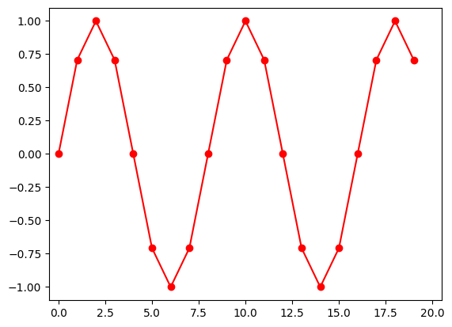
[ 0. 0.71 1. 0.71 0. -0.71 -1. -0.71 -0. 0.71 1. 0.71
0. -0.71 -1. -0.71 -0. 0.71 1. 0.71]- input : 3 consecutive sine values
- output : the sine value that follows the input
- Keras RNN layers expect a 3-D tensor of shape (nb_samples, timesteps, input_dim):
- nb_samples : number of samples
- timesteps : length of each sequence
- input_dim : size of each x vector
- We have a single scalar sequence, so input_dim = 1.
- Three consecutive values are fed in, so timesteps = 3.
- There are 18 samples (windows of 3 taken from 20 data points).
- (nb_samples, timesteps, input_dim) = (18, 3, 1)
X_train = np.zeros((18,3,1))
Y_train = np.zeros(18)
ss = np.r_[s, s]
################## Fill Your Code! ##################
for i in range(18):
X_train[i, :, :] = np.reshape(ss[i:i+3], (3,1))
Y_train[i] = ss[i+3]
#####################################################
print("X_train[0] = " + str(X_train[0, 0]) + str(X_train[0, 1]) + str(X_train[0, 2]))
print()
print("Y_train[0] = " + str(Y_train[0]))X_train[0] = [0.][0.70710678][1.]
Y_train[0] = 0.7071067811865476X_train.shape, Y_train.shape((18, 3, 1), (18,))plt.subplot(211)
plt.plot([0, 1, 2], X_train[0].flatten(), 'bo-', label="input sequence")
plt.plot([3], Y_train[0], 'ro', label="target")
plt.xlim(-0.5, 4.5)
plt.ylim(-1.1, 1.1)
plt.legend()
plt.title("First sample sequence")
plt.subplot(212)
plt.plot([1, 2, 3], X_train[1].flatten(), 'bo-', label="input sequence")
plt.plot([4], Y_train[1], 'ro', label="target")
plt.xlim(-0.5, 4.5)
plt.ylim(-1.1, 1.1)
plt.legend()
plt.title("Second sample sequence")
plt.tight_layout()
plt.show()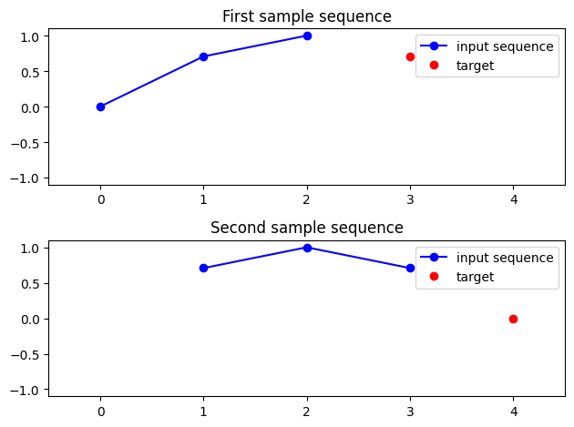
- The RNN structure is shown below.
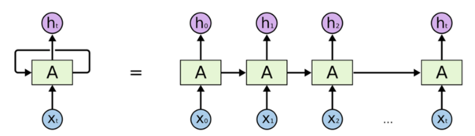
- The structure of Keras’
SimpleRNN:
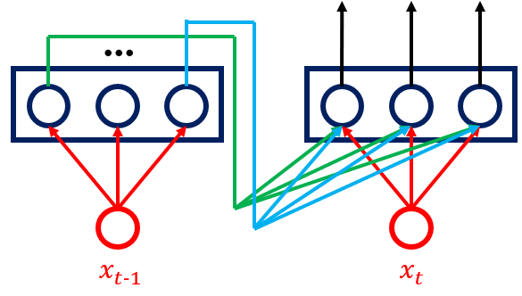
from keras.models import Sequential
from keras.layers import SimpleRNN, Dense
################## Fill Your Code! ##################
np.random.seed(0)
model = Sequential()
model.add(SimpleRNN(10, input_dim=1, input_length=3))
model.add(Dense(1))
#####################################################
model.compile(loss='mse', optimizer='sgd')model.summary()Model: "sequential"
_________________________________________________________________
Layer (type) Output Shape Param #
=================================================================
simple_rnn (SimpleRNN) (None, 10) 120
dense (Dense) (None, 1) 11
=================================================================
Total params: 131 (524.00 Byte)
Trainable params: 131 (524.00 Byte)
Non-trainable params: 0 (0.00 Byte)
_________________________________________________________________plt.plot(Y_train, 'ro-', label="target")
plt.plot(model.predict(X_train[:,:,:]), 'bs-', label="output")
plt.xlim(-0.5, 20.5)
plt.ylim(-1.1, 1.1)
plt.legend()
plt.title("Before training")
plt.show()1/1 [==============================] - 3s 3s/step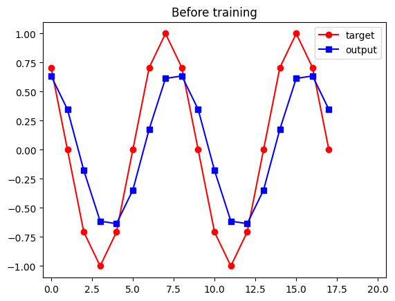
################## Fill Your Code! ##################
history = model.fit(X_train, Y_train, epochs =100, verbose=0)
#####################################################plt.plot(history.history["loss"])
plt.title("Loss")
plt.show()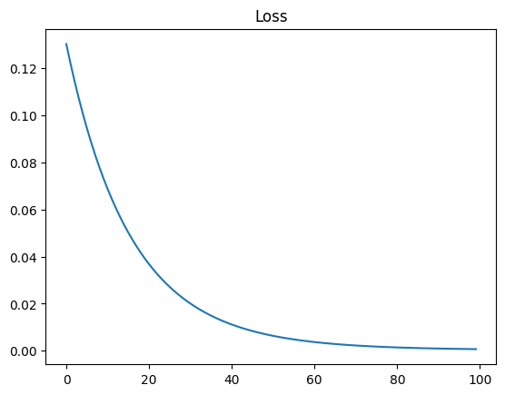
plt.plot(Y_train, 'ro-', label="target")
plt.plot(model.predict(X_train[:,:,:]), 'bs-', label="output")
plt.xlim(-0.5, 20.5)
plt.ylim(-1.1, 1.1)
plt.legend()
plt.title("After training")
plt.show()1/1 [==============================] - 0s 20ms/step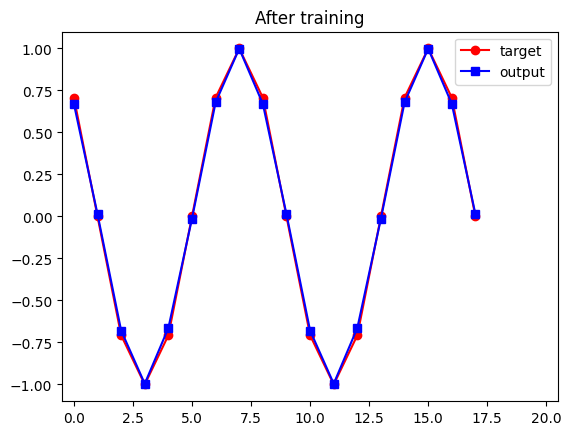
1.2 Predicting a sine function with an RNN (2)
- Given 3 input sine values, predict the next 3 values (many-to-many).
s = np.sin(2 * np.pi * 0.125 * np.arange(20))
plt.plot(s, 'ro-')
plt.xlim(-0.5, 20.5)
plt.ylim(-1.1, 1.1)
plt.show()
print(np.round(s, 2))
[ 0. 0.71 1. 0.71 0. -0.71 -1. -0.71 -0. 0.71 1. 0.71
0. -0.71 -1. -0.71 -0. 0.71 1. 0.71]- input : 3 consecutive sine values
- output : the 3 sine values that follow the input
X_train2 = np.zeros((18,3,1))
Y_train2 = np.zeros((18,3))
ss = np.r_[s, s]
################## Fill Your Code! ##################
for i in range(18):
X_train2[i, :, :] = np.reshape(ss[i:i+3], (3,1))
Y_train2[i,:] = ss[i+3:i+6]
#####################################################
print("X_train2[0] = " + str(X_train2[0, 0]) + str(X_train2[0, 1]) + str(X_train2[0, 2]))
print()
print("Y_train2[0] = " + str(Y_train2[0]))X_train2[0] = [0.][0.70710678][1.]
Y_train2[0] = [ 7.07106781e-01 1.22464680e-16 -7.07106781e-01]from keras.layers import TimeDistributed
model2 = Sequential()
model2.add(SimpleRNN(20, input_dim=1, input_length=3, return_sequences=True))
model2.add(TimeDistributed(Dense(1)))
model2.compile(loss='mse', optimizer='sgd')plt.subplot(211)
plt.plot([0, 1, 2], X_train2[0].flatten(), 'bo-', label="input sequence")
plt.plot([3, 4, 5], Y_train2[0].flatten(), 'ro-', label="target sequence")
plt.xlim(-0.5, 6.5)
plt.ylim(-1.1, 1.1)
plt.legend()
plt.title("First sample sequence")
plt.subplot(212)
plt.plot([1, 2, 3], X_train2[1].flatten(), 'bo-', label="input sequence")
plt.plot([4, 5, 6], Y_train2[1].flatten(), 'ro-', label="target sequence")
plt.xlim(-0.5, 6.5)
plt.ylim(-1.1, 1.1)
plt.legend()
plt.title("Second sample sequence")
plt.tight_layout()
plt.show()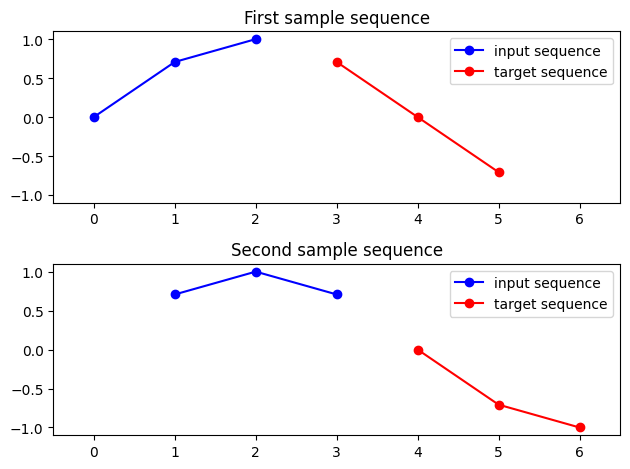
history2 = model2.fit(X_train2, Y_train2, epochs =100, verbose=0)plt.plot(history2.history["loss"])
plt.title("Loss")
plt.show()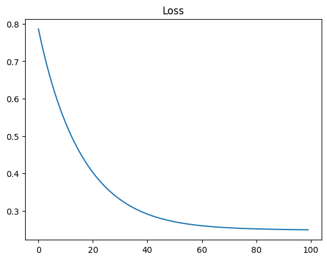
plt.subplot(211)
plt.plot([1, 2, 3], X_train2[1].flatten(), 'bo-', label="input sequence")
plt.plot([4, 5, 6], Y_train2[1].flatten(), 'ro-', label="target sequence")
plt.plot([4, 5, 6], model2.predict(X_train2[1:2,:,:]).flatten(), 'gs-', label="output sequence")
plt.xlim(-0.5, 7.5)
plt.ylim(-1.1, 1.1)
plt.legend()
plt.title("Second sample sequence")
plt.subplot(212)
plt.plot([2, 3, 4], X_train2[2].flatten(), 'bo-', label="input sequence")
plt.plot([5, 6, 7], Y_train2[2].flatten(), 'ro-', label="target sequence")
plt.plot([5, 6, 7], model2.predict(X_train2[2:3,:,:]).flatten(), 'gs-', label="output sequence")
plt.xlim(-0.5, 7.5)
plt.ylim(-1.1, 1.1)
plt.legend()
plt.title("Third sample sequence")
plt.tight_layout()
plt.show()1/1 [==============================] - 0s 178ms/step
1/1 [==============================] - 0s 24ms/step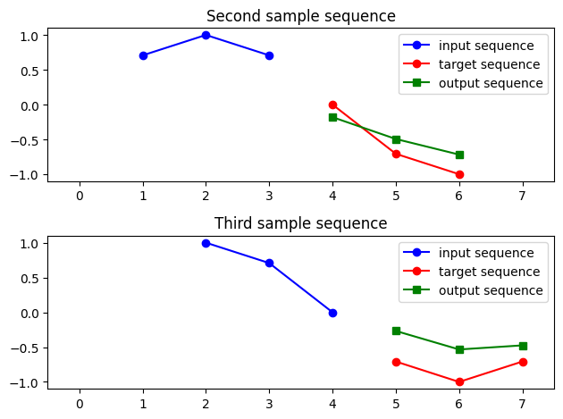
2. Word Prediction with an RNN
- In this example we build a network that, given a word or a sentence, predicts the word that comes next.
- Reference (Korean)
2.0 A Simple Statistical Language Model: N-gram Models
- A simple probabilistic model of language.
- Word probabilities are expressed using the Markov assumption.
Simple example
Given sentence: “Life is like a box of chocolates”
\(w_k\) denotes the k-th word:
\(w_1\) = Life
\(w_2\) = is
\(w_3\) = like
\(\cdots\)
\(w_1^N\) denotes the sentence:
- \(w_1^N\) = Life is like a box of chocolates
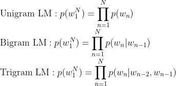
The unigram model models language as
\(p(w_1^N) = \prod_{n=1}^N {p(w_n)} = p(Life) \times p(is) \times p(like) \times p(a) \times p(box) \times \cdots\)
a simple product of word probabilities.
The bigram model models language as
\(p(w_1^N) = \prod_{n=1}^N {p(w_n|w_{n-1})} = p(Life|<s>) \times p(is|Life) \times p(like|is) \times p(a|like) \times p(box|a) \times \cdots\)
a product of conditional probabilities with one word of context.
The trigram model models language as
\(p(w_1^N) = \prod_{n=1}^N {p(w_n|w_{n-1},w_{n-2})} = p(Life|<s> <s>) \times p(is|<s> \, Life) \times p(like|Life \,\, is) \times p(a|is \,\, like) \times p(box|like \,\, a) \times \cdots\)
a product of conditional probabilities with two words of context.
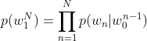
The N-gram model uses conditional probabilities with (N-1) words of context.
Examples of the Markov assumption:
Unigram model
\(p(chocolates|Life \,\, is \,\, like \,\, a \,\, box \,\, of) \approx p(chocolates)\)
Bigram model
\(p(chocolates|Life \,\, is \,\, like \,\, a \,\, box \,\, of) \approx p(chocolates | of)\)
2.1 Predicting the next word
- The first network predicts the next word given a single word.
- Training sentence (Korean): “I like cats, dogs, rabbits, cows, pasta, pizza and hamburgers”.
# Data
# (an alternative Korean tongue-twister sentence was also tried)
text = "나는 고양이와 강아지와 토끼와 소와 파스타와 피자와 햄버거를 좋아한다" # "I like cats, dogs, rabbits, cows, pasta, pizza and hamburgers"
text'나는 고양이와 강아지와 토끼와 소와 파스타와 피자와 햄버거를 좋아한다'!pip install keras_preprocessingCollecting keras_preprocessing
Downloading Keras_Preprocessing-1.1.2-py2.py3-none-any.whl (42 kB)
━━━━━━━━━━━━━━━━━━━━━━━━━━━━━━━━━━━━━━━━ 42.6/42.6 kB 1.4 MB/s eta 0:00:00
[?25hRequirement already satisfied: numpy>=1.9.1 in /usr/local/lib/python3.10/dist-packages (from keras_preprocessing) (1.23.5)
Requirement already satisfied: six>=1.9.0 in /usr/local/lib/python3.10/dist-packages (from keras_preprocessing) (1.16.0)
Installing collected packages: keras_preprocessing
Successfully installed keras_preprocessing-1.1.2# Tokenization: integer encoding
from keras_preprocessing.text import Tokenizer
t = Tokenizer()
t.fit_on_texts([text])
encoded = t.texts_to_sequences([text])[0]
encoded[1, 2, 3, 4, 5, 6, 7, 8, 9]print(t.word_index){'나는': 1, '고양이와': 2, '강아지와': 3, '토끼와': 4, '소와': 5, '파스타와': 6, '피자와': 7, '햄버거를': 8, '좋아한다': 9}sequences = list()
for c in range(1, len(encoded)):
sequence = encoded[c-1:c+1]
# Store consecutive word pairs,
# which define the (X, Y) = (word, next word) relation.
sequences.append(sequence)
print('Number of word pairs: %d' % len(sequences))Number of word pairs: 8print(text)
print(t.word_index)
print(sequences)나는 고양이와 강아지와 토끼와 소와 파스타와 피자와 햄버거를 좋아한다
{'나는': 1, '고양이와': 2, '강아지와': 3, '토끼와': 4, '소와': 5, '파스타와': 6, '피자와': 7, '햄버거를': 8, '좋아한다': 9}
[[1, 2], [2, 3], [3, 4], [4, 5], [5, 6], [6, 7], [7, 8], [8, 9]]import numpy as np
################## Fill Your Code! ##################
X, y = zip(*sequences) # first column -> X, second column -> y
#####################################################
X=np.array(X) # to array
y=np.array(y) # to arrayy.shape(8,)print(X[0:3])
print(y[0:3])[1 2 3]
[2 3 4]vocab_size = len(t.word_index) + 1
# Keras' tokenizer indexes words from 1, while one-hot vectors are
# indexed from 0, so the vocabulary size must be one larger than
# the actual number of words.
print('Vocabulary size : %d' % vocab_size)Vocabulary size : 10from keras.utils import to_categorical
################## Fill Your Code! ##################
y = to_categorical(y, num_classes=vocab_size) # one-hot encoding
#####################################################
print(y)[[0. 0. 1. 0. 0. 0. 0. 0. 0. 0.]
[0. 0. 0. 1. 0. 0. 0. 0. 0. 0.]
[0. 0. 0. 0. 1. 0. 0. 0. 0. 0.]
[0. 0. 0. 0. 0. 1. 0. 0. 0. 0.]
[0. 0. 0. 0. 0. 0. 1. 0. 0. 0.]
[0. 0. 0. 0. 0. 0. 0. 1. 0. 0.]
[0. 0. 0. 0. 0. 0. 0. 0. 1. 0.]
[0. 0. 0. 0. 0. 0. 0. 0. 0. 1.]]from keras.layers import Embedding, Dense, SimpleRNN
from keras.models import Sequential
################## Fill Your Code! ##################
model = Sequential()
model.add(Embedding(vocab_size, 9, input_length=1))
# vocabulary size 9, embedding size 9, each sample is a single word (length 1)
model.add(SimpleRNN(9))
# RNN hidden size 9 (a larger size would also work)
model.add(Dense(vocab_size, activation='softmax'))
# output layer: one probability per vocabulary word
#####################################################model.compile(loss='categorical_crossentropy',optimizer='adam', metrics=['accuracy'])
history3 = model.fit(X, y, epochs=300, verbose=0)plt.plot(history3.history["accuracy"])
plt.title("Accuracy")
plt.show()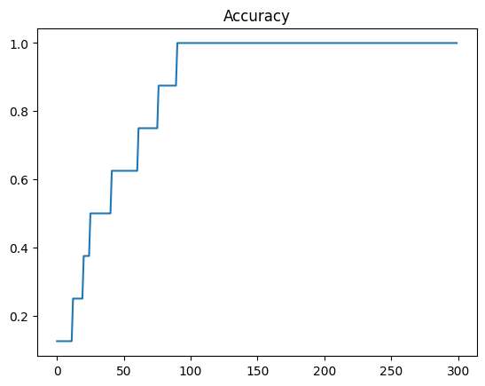
- Results. Note that the generated sentence loops: a one-word context cannot tell the different positions of the repeated conjunction apart.
def predict_next_word(model, t, current_word):
# inputs: model, tokenizer, current word
encoded = t.texts_to_sequences([current_word])[0]
# integer-encode the current word
encoded = np.array(encoded)
# predict Y (the next word) for the input X (current word)
# and store it in result
################## Fill Your Code! ##################
predict_x = model.predict(encoded, verbose=0)
result = np.argmax(predict_x,axis=1)
#####################################################
for word, index in t.word_index.items():
# look the index up in the tokenizer
if index == result:
# if a word has the predicted index
return word
# return ittext'나는 고양이와 강아지와 토끼와 소와 파스타와 피자와 햄버거를 좋아한다'print(predict_next_word(model, t, '나는')) # '나는' = 'I'고양이와def sentence_generation(model, t, current_word, n):
# inputs: model, tokenizer, current word, number of words to generate
init_word = current_word
# keep the seed word so it can be printed with the result
sentence = ''
for _ in range(n):
encoded = t.texts_to_sequences([current_word])[0]
# integer-encode the current word
encoded = np.array(encoded)
# integer-encode the current word
predict_x = model.predict(encoded, verbose=0)
result = np.argmax(predict_x,axis=1)
################## Fill Your Code! ##################
# predict Y (the next word) for the input X (current word)
# and store it in result
for word, index in t.word_index.items():
if index == result:
# if a word has the predicted index
break
# that word is the prediction
current_word = word
# the predicted word becomes the current word
sentence = sentence + ' '+ word
# append it to the sentence
#####################################################
# prepend the seed word
sentence = init_word + sentence
return sentenceprint(text)
print(sentence_generation(model, t, '소와', 10)) # seed: '소와' (= 'cows and')나는 고양이와 강아지와 토끼와 소와 파스타와 피자와 햄버거를 좋아한다
소와 파스타와 피자와 햄버거를 좋아한다 피자와 햄버거를 좋아한다 피자와 햄버거를 좋아한다2.2 Word prediction with context
- The previous network could not learn well when the same word appears in several positions.
- We now add a little context to the input: each training sample is a prefix of a sentence, padded to a fixed length, and the target is the next word.
- The corpus is nine short Korean sentences that all contain the word 말이 (which can mean “horse”, “speech/words”, or be part of an idiom), so the context is essential to predict what follows.
# Nine short Korean sentences, all containing the word "말이"
# ("the horse at the racetrack is running", "his word is law",
# "kind words beget kind words", "nothing more to say", "rolled omelette is delicious",
# "that's exactly what I mean", "you're right", "my name is Mal-i",
# "a handsome horse spoke to me")
text = """경마장에 있는 말이 뛰고 있다\n
그의 말이 법이다\n
가는 말이 고와야 오는 말이 곱다\n
더 이상 할 말이 없다\n
계란 말이는 정말 맛있다\n
내 말이 그 말이야\n
네 말이 맞아\n
내 이름은 말이다\n
멋있는 말이 내게 말을 걸었다\n"""from keras_preprocessing.text import Tokenizer
t = Tokenizer()
t.fit_on_texts([text])
encoded = t.texts_to_sequences([text])[0]vocab_size = len(t.word_index)+1
# Keras' tokenizer indexes words from 1, while one-hot vectors are
# indexed from 0, so the vocabulary size must be one larger than
# the actual number of words.
print('Vocabulary size: %d' % vocab_size)
print(t.word_index)Vocabulary size: 31
{'말이': 1, '내': 2, '경마장에': 3, '있는': 4, '뛰고': 5, '있다': 6, '그의': 7, '법이다': 8, '가는': 9, '고와야': 10, '오는': 11, '곱다': 12, '더': 13, '이상': 14, '할': 15, '없다': 16, '계란': 17, '말이는': 18, '정말': 19, '맛있다': 20, '그': 21, '말이야': 22, '네': 23, '맞아': 24, '이름은': 25, '말이다': 26, '멋있는': 27, '내게': 28, '말을': 29, '걸었다': 30}sequences = list()
for line in text.split('\n'): # split the text into sentences
encoded = t.texts_to_sequences([line])[0]
for i in range(1, len(encoded)):
sequence = encoded[:i+1]
sequences.append(sequence)
print('Number of training samples: %d' % len(sequences))Number of training samples: 29sequences[0:5][[3, 4], [3, 4, 1], [3, 4, 1, 5], [3, 4, 1, 5, 6], [7, 1]]print(max(len(l) for l in sequences))6from keras.utils import pad_sequences
sequences = pad_sequences(sequences, maxlen = 6, padding='pre')
print(sequences[0:5])[[0 0 0 0 3 4]
[0 0 0 3 4 1]
[0 0 3 4 1 5]
[0 3 4 1 5 6]
[0 0 0 0 7 1]]import numpy as np
################## Fill Your Code! ##################
sequences = np.array(sequences)
X = sequences[:, :-1]
y = sequences[:, -1]
#####################################################
print(X[0:5])
print(y[0:5])[[0 0 0 0 3]
[0 0 0 3 4]
[0 0 3 4 1]
[0 3 4 1 5]
[0 0 0 0 7]]
[4 1 5 6 1]from keras.utils import to_categorical
y = to_categorical(y, num_classes=vocab_size)from keras.layers import Embedding, Dense, SimpleRNN
from keras.models import Sequential
model = Sequential()
model.add(Embedding(vocab_size, 10, input_length=5))
# the last token is the target, so the input length is 5
model.add(SimpleRNN(32))
model.add(Dense(vocab_size, activation='softmax'))
model.compile(loss='categorical_crossentropy', optimizer='adam', metrics=['accuracy'])
history4 = model.fit(X, y, epochs=300, verbose=0)plt.plot(history4.history["accuracy"])
plt.title("Accuracy")
plt.show()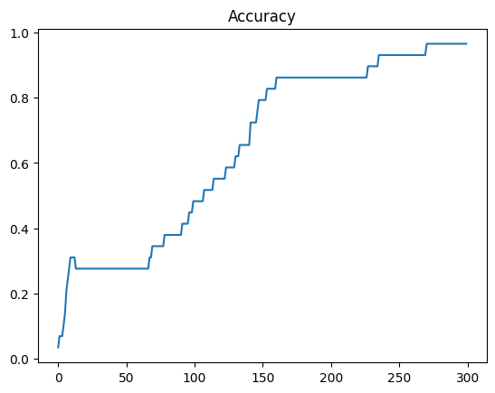
text'경마장에 있는 말이 뛰고 있다\n\n그의 말이 법이다\n\n가는 말이 고와야 오는 말이 곱다\n\n더 이상 할 말이 없다\n\n계란 말이는 정말 맛있다\n\n내 말이 그 말이야\n\n네 말이 맞아\n\n내 이름은 말이다\n\n멋있는 말이 내게 말을 걸었다\n'encoded = t.texts_to_sequences(['경마장에 있는 말이'])[0] # 'the horse at the racetrack'
encoded = pad_sequences([encoded], maxlen=5, padding='pre')
predict_x = model.predict(encoded, verbose=0)
result=np.argmax(predict_x,axis=1)
for word, index in t.word_index.items():
if index == result:
break
print(word)뛰고def sentence_generation(model, t, current_word, n):
# inputs: model, tokenizer, current word, number of words to generate
init_word = current_word
# keep the seed word so it can be printed with the result
sentence = ''
for _ in range(n):
encoded = t.texts_to_sequences([current_word])[0]
# integer-encode the current word
encoded = pad_sequences([encoded], maxlen=5, padding='pre')
# pad the sequence
predict_x = model.predict(encoded, verbose=0)
result=np.argmax(predict_x,axis=1)
# predict Y (the next word) for the input X and
# store it in result
for word, index in t.word_index.items():
if index == result:
break
current_word = current_word + ' ' + word
# the context grows: current words + predicted word
sentence = sentence + ' ' + word
# prepend the seed word
sentence = init_word + sentence
return sentenceprint(sentence_generation(model, t, '경마장에', 4)) # seed: 'at the racetrack'경마장에 있는 말이 뛰고 있다print(sentence_generation(model, t, '그의', 2)) # seed: 'his'그의 말이 법이다print(sentence_generation(model, t, '멋있는 말이', 3)) # seed: 'a handsome horse'멋있는 말이 내게 말을 걸었다3. Review Sentiment Analysis with an LSTM
- We now classify movie reviews as positive or negative.
- Dataset: Naver Sentiment Movie Corpus (NSMC).
- Reference (Korean)
!pip install konlpyCollecting konlpy
Downloading konlpy-0.6.0-py2.py3-none-any.whl (19.4 MB)
━━━━━━━━━━━━━━━━━━━━━━━━━━━━━━━━━━━━━━━━ 19.4/19.4 MB 57.6 MB/s eta 0:00:00
[?25hCollecting JPype1>=0.7.0 (from konlpy)
Downloading JPype1-1.4.1-cp310-cp310-manylinux_2_12_x86_64.manylinux2010_x86_64.whl (465 kB)
━━━━━━━━━━━━━━━━━━━━━━━━━━━━━━━━━━━━━━━━ 465.3/465.3 kB 49.7 MB/s eta 0:00:00
[?25hRequirement already satisfied: lxml>=4.1.0 in /usr/local/lib/python3.10/dist-packages (from konlpy) (4.9.3)
Requirement already satisfied: numpy>=1.6 in /usr/local/lib/python3.10/dist-packages (from konlpy) (1.23.5)
Requirement already satisfied: packaging in /usr/local/lib/python3.10/dist-packages (from JPype1>=0.7.0->konlpy) (23.2)
Installing collected packages: JPype1, konlpy
Successfully installed JPype1-1.4.1 konlpy-0.6.0import pandas as pd
import numpy as np
import matplotlib.pyplot as plt
import re
import urllib.request
from konlpy.tag import Okt
from tqdm import tqdm
from tensorflow.keras.preprocessing.text import Tokenizer
from tensorflow.keras.preprocessing.sequence import pad_sequences1) Loading the data
urllib.request.urlretrieve("https://raw.githubusercontent.com/e9t/nsmc/master/ratings_train.txt", filename="ratings_train.txt")
urllib.request.urlretrieve("https://raw.githubusercontent.com/e9t/nsmc/master/ratings_test.txt", filename="ratings_test.txt")('ratings_test.txt', <http.client.HTTPMessage at 0x7a93e6d9ee00>)train_data = pd.read_table('ratings_train.txt')
test_data = pd.read_table('ratings_test.txt')print('Number of training reviews :',len(train_data))
print('Number of test reviews :',len(test_data))Number of training reviews : 150000
Number of test reviews : 50000# label 0 = negative, 1 = positive
train_data[10:15]| id | document | label | |
|---|---|---|---|
| 10 | 9008700 | 걍인피니트가짱이다.진짜짱이다♥ | 1 |
| 11 | 10217543 | 볼때마다 눈물나서 죽겠다90년대의 향수자극!!허진호는 감성절제멜로의 달인이다~ | 1 |
| 12 | 5957425 | 울면서 손들고 횡단보도 건널때 뛰쳐나올뻔 이범수 연기 드럽게못해 | 0 |
| 13 | 8628627 | 담백하고 깔끔해서 좋다. 신문기사로만 보다 보면 자꾸 잊어버린다. 그들도 사람이었다… | 1 |
| 14 | 9864035 | 취향은 존중한다지만 진짜 내생에 극장에서 본 영화중 가장 노잼 노감동임 스토리도 어… | 0 |
2) Preprocessing
# number of unique values in the document and label columns
train_data['document'].nunique(), train_data['label'].nunique()(146182, 2)# drop duplicate documents
train_data.drop_duplicates(subset=['document'], inplace=True)print('Total number of samples :',len(train_data))Total number of samples : 146183train_data['label'].value_counts().plot(kind = 'bar')<Axes: >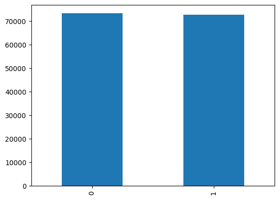
# check for null rows
train_data.loc[train_data.document.isnull()]| id | document | label | |
|---|---|---|---|
| 25857 | 2172111 | NaN | 1 |
# remove everything except Hangul characters and spaces
train_data = train_data.dropna(how = 'any') # drop rows with null values
print(len(train_data))146182# Example: remove everything except letters and spaces
################## Fill Your Code! ##################
eng_text = 'do!!! you expect... people~ to~ read~ the FAQ, etc. and actually accept hard~! atheism?@@'
print(re.sub(r'[^a-zA-Z ]', '', eng_text))
#####################################################do you expect people to read the FAQ etc and actually accept hard atheismtrain_data[10:15]| id | document | label | |
|---|---|---|---|
| 10 | 9008700 | 걍인피니트가짱이다.진짜짱이다♥ | 1 |
| 11 | 10217543 | 볼때마다 눈물나서 죽겠다90년대의 향수자극!!허진호는 감성절제멜로의 달인이다~ | 1 |
| 12 | 5957425 | 울면서 손들고 횡단보도 건널때 뛰쳐나올뻔 이범수 연기 드럽게못해 | 0 |
| 13 | 8628627 | 담백하고 깔끔해서 좋다. 신문기사로만 보다 보면 자꾸 잊어버린다. 그들도 사람이었다… | 1 |
| 14 | 9864035 | 취향은 존중한다지만 진짜 내생에 극장에서 본 영화중 가장 노잼 노감동임 스토리도 어… | 0 |
################## Fill Your Code! ##################
train_data['document'] = train_data['document'].str.replace("[^ㄱ-ㅎㅏ-ㅣ가-힣 ]","") # keep Hangul and spaces only
#####################################################
train_data[10:15]<ipython-input-16-00a5ec42ffea>:2: FutureWarning: The default value of regex will change from True to False in a future version.
train_data['document'] = train_data['document'].str.replace("[^ㄱ-ㅎㅏ-ㅣ가-힣 ]","")| id | document | label | |
|---|---|---|---|
| 10 | 9008700 | 걍인피니트가짱이다진짜짱이다 | 1 |
| 11 | 10217543 | 볼때마다 눈물나서 죽겠다년대의 향수자극허진호는 감성절제멜로의 달인이다 | 1 |
| 12 | 5957425 | 울면서 손들고 횡단보도 건널때 뛰쳐나올뻔 이범수 연기 드럽게못해 | 0 |
| 13 | 8628627 | 담백하고 깔끔해서 좋다 신문기사로만 보다 보면 자꾸 잊어버린다 그들도 사람이었다는 것을 | 1 |
| 14 | 9864035 | 취향은 존중한다지만 진짜 내생에 극장에서 본 영화중 가장 노잼 노감동임 스토리도 어… | 0 |
train_data['document'] = train_data['document'].str.replace('^ +', "") # whitespace-only -> empty string
train_data['document'].replace('', np.nan, inplace=True)
print(train_data.isnull().sum())id 0
document 789
label 0
dtype: int64<ipython-input-17-c2f9538d5bc3>:1: FutureWarning: The default value of regex will change from True to False in a future version.
train_data['document'] = train_data['document'].str.replace('^ +', "") # whitespace-only -> empty stringtrain_data.loc[train_data.document.isnull()][:5]| id | document | label | |
|---|---|---|---|
| 404 | 4221289 | NaN | 0 |
| 412 | 9509970 | NaN | 1 |
| 470 | 10147571 | NaN | 1 |
| 584 | 7117896 | NaN | 0 |
| 593 | 6478189 | NaN | 0 |
train_data = train_data.dropna(how = 'any')
print(len(train_data))145393test_data.drop_duplicates(subset = ['document'], inplace=True) # drop duplicate documents
test_data['document'] = test_data['document'].str.replace("[^ㄱ-ㅎㅏ-ㅣ가-힣 ]","") # keep Hangul and spaces only
test_data['document'] = test_data['document'].str.replace('^ +', "") # whitespace-only -> empty string
test_data['document'].replace('', np.nan, inplace=True) # empty string -> NaN
test_data = test_data.dropna(how='any') # drop null rows
print('Number of test samples after preprocessing :',len(test_data))Number of test samples after preprocessing : 48852<ipython-input-20-5b76039d829d>:2: FutureWarning: The default value of regex will change from True to False in a future version.
test_data['document'] = test_data['document'].str.replace("[^ㄱ-ㅎㅏ-ㅣ가-힣 ]","") # keep Hangul and spaces only
<ipython-input-20-5b76039d829d>:3: FutureWarning: The default value of regex will change from True to False in a future version.
test_data['document'] = test_data['document'].str.replace('^ +', "") # whitespace-only -> empty string3) Tokenization
stopwords = ['의','가','이','은','들','는','좀','잘','걍','과','도','를','으로','자','에','와','한','하다'] # Korean particles / function words# Okt splits a sentence into morphemes (stem=True normalizes verb forms);
# the stop-word list removes particles and conjunctions.
okt = Okt()
okt.morphs('와 이런 것도 영화라고 차라리 뮤직비디오를 만드는 게 나을 뻔', stem = True) # "Wow, they call this a movie? A music video would have been better"['오다', '이렇다', '것', '도', '영화', '라고', '차라리', '뮤직비디오', '를', '만들다', '게', '나다', '뻔']
Note
Morphological analysis of ~146k reviews with Okt is slow. The cell below was interrupted after partially running in the recorded session; the fully tokenized lists were produced in a separate run and cached with pickle (see the SAVE / LOAD cells that follow).
X_train = []
for sentence in tqdm(train_data['document']):
tokenized_sentence = okt.morphs(sentence, stem=True) # tokenize
stopwords_removed_sentence = [word for word in tokenized_sentence if not word in stopwords] # remove stop words
X_train.append(stopwords_removed_sentence)
print(X_train[:3]) 2%|▏ | 2942/145393 [00:11<09:21, 253.68it/s]KeyboardInterrupt: ignoredX_test = []
for sentence in tqdm(test_data['document']):
tokenized_sentence = okt.morphs(sentence, stem=True) # tokenize
stopwords_removed_sentence = [word for word in tokenized_sentence if not word in stopwords] # remove stop words
X_test.append(stopwords_removed_sentence)
print(X_test[:3])# SAVE
import pickle
output = open("X_train.dat", "wb")
pickle.dump(X_train, output) # converts array to binary and writes to output
output = open("X_test.dat", "wb")
pickle.dump(X_test, output) # converts array to binary and writes to output# LOAD
import pickle
output = open("X_train.dat", "rb")
X_train = pickle.load(output) # Reads the binary and converts back to list
output = open("X_test.dat", "rb")
X_test = pickle.load(output) # Reads the binary and converts back to list
print(X_train[10:15])
print(X_test[10:15])[['인피니트', '짱', '이다', '진짜', '짱', '이다'], ['볼때', '마다', '눈물나다', '죽다', '년대', '향수', '극', '허진호', '감성', '절제', '멜로', '달인', '이다'], ['울면', '서', '손', '고', '횡단보도', '건너다', '때', '뛰다', '치다', '올', '뻔', '이범수', '연기', '드럽다', '못'], ['담백하다', '깔끔하다', '좋다', '신', '문', '기', '사', '로만', '보다', '보다', '자꾸', '잊어버리다', '그', '사람', '이다', '것', '을'], ['취향', '존중', '다지', '만', '진짜', '내생', '극장', '에서', '보다', '영화', '중', '가장', '노잼', '노', '감동', '임', '스토리', '어거지', '고', '감동', '어거지']]
[['한국', '독립영화', '한계', '그렇게', '아버지', '되다', '비교', '되다'], ['청춘', '아름답다', '그', '아름답다', '움', '이성', '을', '흔들다', '놓다', '찰나', '아름답다', '움', '을', '자다', '포착', '섬세하다', '아름답다', '수채화', '같다', '퀴어', '영화', '이다'], ['눈', '보이다', '반전', '이다', '영화', '흡인', '력', '사라지다', '않다'], ['스토리', '연출', '연기', '비주', '얼', '등', '영화', '기본', '조차', '안되다', '영화', '무슨', '평', '을', '해', '이렇다', '영화', '찍다', '김문옥', '감독', '내', '영화', '경력', '몇', '인데', '조무래기', '내', '영화', '평론', '같다', '마인드', '빠지다'], ['소위', 'ㅈ', '문', '가라', '평점', '뭐', '냐']]4) Integer encoding
tokenizer = Tokenizer()
tokenizer.fit_on_texts(X_train)print(tokenizer.word_index){'영화': 1, '보다': 2, '을': 3, '없다': 4, '이다': 5, '있다': 6, '좋다': 7, '너무': 8, '다': 9, '정말': 10, '되다': 11, '재밌다': 12, '적': 13, '만': 14, '같다': 15, '진짜': 16, '로': 17, '아니다': 18, '않다': 19, '점': 20, '에서': 21, '만들다': 22, '나오다': 23, '연기': 24, '것': 25, '평점': 26, '내': 27, '최고': 28, '그': 29, '나': 30, '안': 31, '인': 32, '스토리': 33, '생각': 34, '못': 35, '왜': 36, '드라마': 37, '게': 38, '감동': 39, '사람': 40, '보고': 41, '이렇다': 42, '말': 43, '고': 44, '아깝다': 45, '더': 46, '배우': 47, '때': 48, 'ㅋㅋ': 49, '아': 50, '감독': 51, '거': 52, '그냥': 53, '재미있다': 54, '요': 55, '재미': 56, '시간': 57, '내용': 58, '뭐': 59, '까지': 60, '중': 61, '주다': 62, '자다': 63, '하고': 64, '지루하다': 65, '재미없다': 66, '쓰레기': 67, '수': 68, '네': 69, '모르다': 70, '가다': 71, '들다': 72, '그렇다': 73, '싶다': 74, '지': 75, '작품': 76, '사랑': 77, '알다': 78, '하나': 79, '다시': 80, '마지막': 81, '볼': 82, '이건': 83, '정도': 84, '저': 85, '완전': 86, '오다': 87, 'ㅋ': 88, 'ㅠㅠ': 89, '많다': 90, '처음': 91, 'ㅋㅋㅋ': 92, '장면': 93, '액션': 94, '주인공': 95, '이렇게': 96, '안되다': 97, '걸': 98, '차다': 99, '나다': 100, '개': 101, '하': 102, '최악': 103, '돈': 104, '이야기': 105, '지금': 106, '넘다': 107, '느낌': 108, '임': 109, '연출': 110, 'ㅡㅡ': 111, '라': 112, '인데': 113, '듯': 114, '끝': 115, '명작': 116, '좋아하다': 117, '그리고': 118, '년': 119, '별로': 120, '역시': 121, '받다': 122, '기': 123, '많이': 124, '남다': 125, '별': 126, '이해': 127, '난': 128, '면': 129, '이런': 130, '이영화': 131, '분': 132, '괜찮다': 133, '라고': 134, '느끼다': 135, '또': 136, '버리다': 137, '이나': 138, '때문': 139, '성': 140, '여자': 141, '서': 142, '부터': 143, '먹다': 144, '일': 145, '아름답다': 146, '해주다': 147, '꼭': 148, '보기': 149, '엔': 150, '이고': 151, '두': 152, '무슨': 153, '여': 154, '에게': 155, '기억': 156, '결말': 157, '편': 158, '대': 159, 'ㅎㅎ': 160, '랑': 161, '야': 162, '짱': 163, '아쉽다': 164, '인생': 165, '마음': 166, '영': 167, '소재': 168, '뻔하다': 169, '끄다': 170, '애': 171, '전': 172, '보여주다': 173, '님': 174, '어떻다': 175, '없이': 176, '수준': 177, '어리다': 178, '현실': 179, '무섭다': 180, '맞다': 181, '한번': 182, '속': 183, '씨': 184, '가장': 185, '재다': 186, '급': 187, '본': 188, '웃기다': 189, '반전': 190, '매력': 191, '되어다': 192, '전개': 193, '제': 194, '라는': 195, '한국': 196, '남자': 197, '끝나다': 198, '가슴': 199, '뿐': 200, '낮다': 201, '말다': 202, '아이': 203, '죽다': 204, '슬프다': 205, '높다': 206, '유치하다': 207, '음악': 208, '알': 209, '니': 210, '다른': 211, '멋지다': 212, '원작': 213, '줄': 214, '늘다': 215, '인간': 216, '화': 217, '솔직하다': 218, '크다': 219, '냐': 220, '우리': 221, '추천': 222, '눈물': 223, '쓰다': 224, '살다': 225, '인지': 226, '모든': 227, '지만': 228, '내다': 229, '함': 230, '자체': 231, '번': 232, '야하다': 233, '허다': 234, '눈': 235, '찍다': 236, '하지만': 237, '인가': 238, '캐릭터': 239, '보이다': 240, '코미디': 241, '처럼': 242, 'ㅋㅋㅋㅋ': 243, '대한': 244, '움': 245, '모두': 246, '이상': 247, '뭔가': 248, '대박': 249, 'ㅠ': 250, '돼다': 251, '이네': 252, '전혀': 253, '이쁘다': 254, '연기력': 255, '건지다': 256, '여운': 257, '미치다': 258, '그래도': 259, '짜증나다': 260, '개봉': 261, '공감': 262, '일본': 263, '기대': 264, '기대하다': 265, '시리즈': 266, '근데': 267, '중간': 268, '지다': 269, '표현': 270, '영상': 271, '부분': 272, '아주': 273, '모습': 274, '에는': 275, '작': 276, '제목': 277, '계속': 278, '이랑': 279, '치다': 280, '귀엽다': 281, '이라': 282, '시키다': 283, 'ㅜㅜ': 284, '가족': 285, '내내': 286, '뭔': 287, '보지': 288, '믿다': 289, '진심': 290, '실망': 291, '몰입': 292, '밖에': 293, '후': 294, '짜다': 295, '기분': 296, '대단하다': 297, '연': 298, '작가': 299, '떨어지다': 300, '건': 301, '잔잔하다': 302, 'ㅎ': 303, '이제': 304, '위': 305, '웃다': 306, '요즘': 307, '공포': 308, '빠지다': 309, '스릴러': 310, '이라는': 311, '시': 312, '감': 313, '긴장감': 314, '개인': 315, '용': 316, '잼': 317, '조금': 318, '애니': 319, '대사': 320, '이유': 321, '알바': 322, '특히': 323, '제대로': 324, '삶': 325, '울다': 326, '극장': 327, '점도': 328, '노래': 329, '한테': 330, '딱': 331, '욕': 332, '굿': 333, '점수': 334, '잇다': 335, '시작': 336, '막장': 337, '이란': 338, '나름': 339, '오랜': 340, '이상하다': 341, '극': 342, '이지': 343, '예쁘다': 344, '깊다': 345, '에도': 346, '노잼': 347, '제일': 348, '차라리': 349, '놈': 350, '느껴지다': 351, '친구': 352, '해보다': 353, '영화로': 354, '당시': 355, '같이': 356, '어설프다': 357, '의미': 358, '절대': 359, '빼다': 360, '식': 361, '력': 362, '위해': 363, '류': 364, '세상': 365, '따뜻하다': 366, '찾다': 367, '몇': 368, '아직도': 369, '훌륭하다': 370, '이라고': 371, '년대': 372, '공포영화': 373, '명': 374, '미국': 375, '웃음': 376, '도대체': 377, '생각나다': 378, '설정': 379, '아무': 380, '앞': 381, '무엇': 382, '마다': 383, '그리다': 384, '오': 385, '너': 386, '죽이다': 387, '어': 388, '초반': 389, '써다': 390, '다르다': 391, '데': 392, '물': 393, '뭘': 394, '우리나라': 395, '출연': 396, '수작': 397, '따다': 398, '힘들다': 399, '답답하다': 400, '사실': 401, '싫다': 402, '엄청': 403, '추억': 404, '한국영': 405, '가지': 406, '반': 407, '남': 408, '멋있다': 409, '놓다': 410, '시나리오': 411, '신선하다': 412, '아프다': 413, '관객': 414, '분위기': 415, '이야': 416, '필요없다': 417, '대다': 418, '팬': 419, '기다': 420, '장난': 421, '시대': 422, '해': 423, '지루함': 424, '어이없다': 425, '잊다': 426, '세': 427, '나쁘다': 428, '살': 429, '자신': 430, '소리': 431, '이딴': 432, '감정': 433, '졸작': 434, '엔딩': 435, '이지만': 436, '영화관': 437, '준': 438, '안타깝다': 439, '오늘': 440, '엄마': 441, '멀다': 442, '구': 443, '결국': 444, '접': 445, '제발': 446, '정신': 447, '봄': 448, '주': 449, '인상': 450, '부족하다': 451, '스럽다': 452, '배우다': 453, '더빙': 454, '원': 455, '더럽다': 456, '포스터': 457, '캐스팅': 458, '라면': 459, '최고다': 460, '평가': 461, '코믹': 462, '문제': 463, '니까': 464, '얼마나': 465, '아무리': 466, '엉': 467, '애니메이션': 468, '함께': 469, '그저': 470, '어색하다': 471, '몰입도': 472, '서다': 473, '신': 474, '낫다': 475, '티비': 476, '기도': 477, '든': 478, '배경': 479, '비다': 480, '첨': 481, '살리다': 482, '두다': 483, '대해': 484, '유쾌하다': 485, '음': 486, '쓸다': 487, '뒤': 488, '망하다': 489, '맘': 490, '킬링타임': 491, '나가다': 492, '스릴': 493, '충격': 494, '완벽하다': 495, '전쟁': 496, '만화': 497, '얘기': 498, '진부하다': 499, '등': 500, '존나': 501, '적다': 502, '책': 503, '건가': 504, '개연': 505, '예술': 506, '그렇게': 507, '간': 508, '머': 509, '머리': 510, '갈수록': 511, '매우': 512, '질': 513, '즐겁다': 514, '놀라다': 515, '조': 516, '얼굴': 517, '보단': 518, '웃기': 519, '후회': 520, '이름': 521, '읽다': 522, '영화인': 523, '너무나': 524, '옛날': 525, '구성': 526, '어디': 527, '어울리다': 528, '행복하다': 529, '집중': 530, '이후': 531, '들이다': 532, '울': 533, '총': 534, '꽤': 535, '장르': 536, '집': 537, '새롭다': 538, '주연': 539, '날': 540, '다큐': 541, '시즌': 542, '상황': 543, '누구': 544, '그래서': 545, '이리': 546, '상': 547, '억지': 548, '언제': 549, '짜증': 550, '씬': 551, '생기다': 552, '예전':
... [output truncated] ...################## Fill Your Code! ##################
threshold = 3
#####################################################
total_cnt = len(tokenizer.word_index) # number of words
rare_cnt = 0 # number of words that appear fewer than `threshold` times
total_freq = 0 # total word count in the training data
rare_freq = 0 # total count of the rare words
# iterate over (word, count) pairs
for key, value in tokenizer.word_counts.items():
total_freq = total_freq + value
# rare word
if(value < threshold):
rare_cnt = rare_cnt + 1
rare_freq = rare_freq + value
print('Vocabulary size :',total_cnt)
print('Number of rare words appearing at most %s times: %s'%(threshold - 1, rare_cnt))
print("Share of rare words in the vocabulary (%):", (rare_cnt / total_cnt)*100)
print("Share of rare-word occurrences in all occurrences (%):", (rare_freq / total_freq)*100)Vocabulary size : 43752
Number of rare words appearing at most 2 times: 24337
Share of rare words in the vocabulary (%): 55.62488571950996
Share of rare-word occurrences in all occurrences (%): 1.8715872104872904# drop words that appear at most twice;
# +1 for the padding token 0
vocab_size = total_cnt - rare_cnt + 1
print('Vocabulary size :',vocab_size)Vocabulary size : 19416tokenizer = Tokenizer(vocab_size)
tokenizer.fit_on_texts(X_train)
X_train = tokenizer.texts_to_sequences(X_train)
X_test = tokenizer.texts_to_sequences(X_test)print(X_train[10])[4687, 163, 5, 16, 163, 5]y_train = np.array(train_data['label'])
y_test = np.array(test_data['label'])5) Removing empty samples
drop_train = [index for index, sentence in enumerate(X_train) if len(sentence) < 1]# remove samples that became empty after dropping rare words
X_train = np.delete(X_train, drop_train, axis=0)
y_train = np.delete(y_train, drop_train, axis=0)
print(len(X_train))
print(len(y_train))145162
145162/usr/local/lib/python3.10/dist-packages/numpy/lib/function_base.py:5071: VisibleDeprecationWarning: Creating an ndarray from ragged nested sequences (which is a list-or-tuple of lists-or-tuples-or ndarrays with different lengths or shapes) is deprecated. If you meant to do this, you must specify 'dtype=object' when creating the ndarray.
arr = asarray(arr)6) Padding
print('Maximum review length :',max(len(review) for review in X_train))
print('Average review length :',sum(map(len, X_train))/len(X_train))
plt.hist([len(review) for review in X_train], bins=50)
plt.xlabel('length of samples')
plt.ylabel('number of samples')
plt.show()Maximum review length : 69
Average review length : 10.812485361182679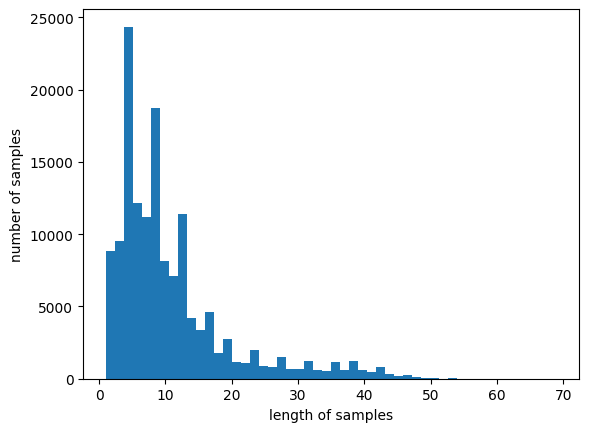
def below_threshold_len(max_len, nested_list):
count = 0
for sentence in nested_list:
if(len(sentence) <= max_len):
count = count + 1
print('Share of samples with length <= %s: %s'%(max_len, (count / len(nested_list))*100))################## Fill Your Code! ##################
max_len = 35
below_threshold_len(max_len, X_train)
#####################################################Share of samples with length <= 35: 96.35717336493022# pad / truncate every sample to length 35
X_train = pad_sequences(X_train, maxlen=max_len)
X_test = pad_sequences(X_test, maxlen=max_len)X_train.shape(145162, 35)7) Classifying NSMC reviews with an LSTM
An embedding layer is needed when a network takes text as input.
Think of it as turning each word into a dense vector.
from tensorflow.keras.layers import Embedding, Dense, LSTM
from tensorflow.keras.models import Sequential
from tensorflow.keras.models import load_model
from tensorflow.keras.callbacks import EarlyStopping, ModelCheckpoint
################## Fill Your Code! ##################
embedding_dim = 100
hidden_units = 128
model = Sequential()
model.add(Embedding(vocab_size, embedding_dim))
model.add(LSTM(hidden_units))
model.add(Dense(1, activation='sigmoid'))
#####################################################
#es = EarlyStopping(monitor='val_loss', mode='min', verbose=1, patience=4)
#mc = ModelCheckpoint('best_model.h5', monitor='val_acc', mode='max', verbose=1, save_best_only=True)
model.compile(optimizer='rmsprop', loss='binary_crossentropy', metrics=['acc'])
#history = model.fit(X_train, y_train, epochs=15, callbacks=[es, mc], batch_size=64, validation_split=0.2)
history = model.fit(X_train, y_train, epochs=10, batch_size=64, validation_split=0.2)Epoch 1/10
1815/1815 [==============================] - 52s 24ms/step - loss: 0.4087 - acc: 0.8115 - val_loss: 0.3718 - val_acc: 0.8379
Epoch 2/10
1815/1815 [==============================] - 16s 9ms/step - loss: 0.3456 - acc: 0.8493 - val_loss: 0.3523 - val_acc: 0.8452
Epoch 3/10
1815/1815 [==============================] - 14s 8ms/step - loss: 0.3193 - acc: 0.8639 - val_loss: 0.3405 - val_acc: 0.8523
Epoch 4/10
1815/1815 [==============================] - 15s 8ms/step - loss: 0.2964 - acc: 0.8772 - val_loss: 0.3410 - val_acc: 0.8519
Epoch 5/10
1815/1815 [==============================] - 13s 7ms/step - loss: 0.2767 - acc: 0.8870 - val_loss: 0.3384 - val_acc: 0.8564
Epoch 6/10
1815/1815 [==============================] - 14s 7ms/step - loss: 0.2587 - acc: 0.8971 - val_loss: 0.3333 - val_acc: 0.8565
Epoch 7/10
1815/1815 [==============================] - 13s 7ms/step - loss: 0.2412 - acc: 0.9049 - val_loss: 0.3395 - val_acc: 0.8533
Epoch 8/10
1815/1815 [==============================] - 15s 8ms/step - loss: 0.2248 - acc: 0.9133 - val_loss: 0.3534 - val_acc: 0.8550
Epoch 9/10
1815/1815 [==============================] - 14s 7ms/step - loss: 0.2085 - acc: 0.9209 - val_loss: 0.3622 - val_acc: 0.8506
Epoch 10/10
1815/1815 [==============================] - 13s 7ms/step - loss: 0.1936 - acc: 0.9263 - val_loss: 0.3819 - val_acc: 0.8493#loaded_model = load_model('best_model.h5')
#print("\n Test accuracy: %.4f" % (loaded_model.evaluate(X_test, y_test)[1]))
print("\n Test accuracy: %.4f" % (model.evaluate(X_test, y_test)[1]))1527/1527 [==============================] - 6s 4ms/step - loss: 0.3915 - acc: 0.8460
Test accuracy: 0.84608) Predicting the sentiment of new reviews
def sentiment_predict(new_sentence):
new_sentence = re.sub(r'[^ㄱ-ㅎㅏ-ㅣ가-힣 ]','', new_sentence) # keep Hangul and spaces only
new_sentence = okt.morphs(new_sentence, stem=True) # tokenize
new_sentence = [word for word in new_sentence if not word in stopwords] # remove stop words
encoded = tokenizer.texts_to_sequences([new_sentence]) # integer encoding
pad_new = pad_sequences(encoded, maxlen = max_len) # padding
score = float(model.predict(pad_new)) # predict
#score = float(loaded_model.predict(pad_new)) # predict
if(score > 0.5):
print("Positive review with probability {:.2f}%.\n".format(score * 100))
else:
print("Negative review with probability {:.2f}%.\n".format((1 - score) * 100))sentiment_predict('이 영화 개꿀잼 ㅋㅋㅋ') # "This movie is hilarious lol"1/1 [==============================] - 0s 462ms/step
89.30% probability: positive review.sentiment_predict('이 영화 핵노잼 ㅠㅠ') # "This movie is so boring :("1/1 [==============================] - 0s 18ms/step
96.67% probability: negative review.sentiment_predict('이게 뭐야 ㅠㅠㅠ 돈이 아까울랑 말랑 모르겠다 ㅠㅠㅠ') # "What is this... not sure if it was worth the money"1/1 [==============================] - 0s 18ms/step
90.54% probability: negative review.sentiment_predict('그러니까 이 영화는 재미없는게 아닌게 아니다') # "So it's not that this movie isn't un-fun" (double negation)1/1 [==============================] - 0s 21ms/step
60.44% probability: negative review.sentiment_predict('이게 뭐냐!!!!') # "What is this!!!!"1/1 [==============================] - 0s 17ms/step
95.19% probability: negative review.sentiment_predict('ㅋㅋㅋㅋㅋㅋ') # "lololol"1/1 [==============================] - 0s 18ms/step
66.63% probability: positive review.sentiment_predict('으.... 이건 너무... 재미 있다') # "Ugh.... this is so... fun"1/1 [==============================] - 0s 74ms/step
73.08% probability: positive review.